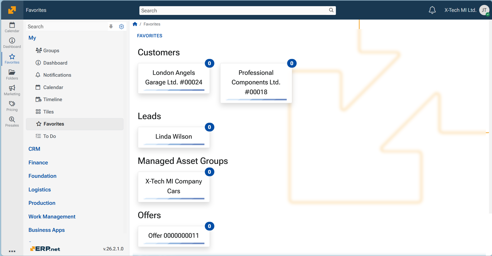
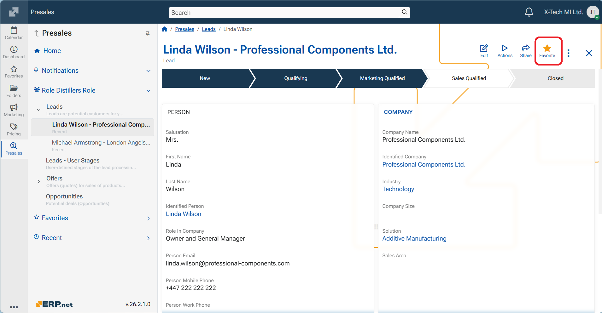

Favorites
The Favorites screen allows users to build a personalized list of frequently accessed entities within ERP.net. This includes customers, campaigns, product groups, documents, or any other business entities. By marking items as favorites, you can easily access them from one place and receive notifications about relevant updates or events.
Favorites are context-aware and can include both top-level entities as well as individual records.

Interface
All marked favorites are displayed in one place, providing a centralized view of the items you follow.
Notifications
When an entity is added as a favorite, you will automatically receive system notifications about related updates and activities. For example, marking a customer as favorite may trigger notifications for new opportunities, campaigns, or communications linked to that customer.
Categories in Favorites
Favorites are grouped automatically by entity type. Common categories include:
- Customers – e.g., companies, organizations, or accounts you follow.
- Campaigns – marketing or sales campaigns you track.
- Product Groups – collections of products or services.
- Other entities – these may include include leads, opportunities, sales order, or other business entities.
This categorization ensures that items remain organized and easy to navigate even if you track a large number of records.
Add a favorite
To add a new item to your favorites:
Open the entity page (e.g., a customer record, campaign, or document).
Click the star icon at the top-right corner of the screen until it turns orange in colour and with status Favorite
The item will now appear under the Favorites section of your My menu.

Remove a favorite
To remove any of your existing favorites, click the Menu button (three vertical dots) at the top-right corner and select Edit.
This toggles edit mode and displays controls for each favorite item. Click the cross button of a favorite to remove it from the list.

Note
The screenshots taken for this article are from v26 of the platform.
Follow the link to learn how to use Favorites in Web Client